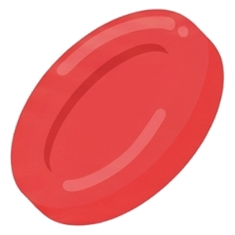

게임 개념 이해하기
노폐물
물
단백질
백혈구

적혈구피 속에는 여러가지 물질이 있는데 콩팥을 지나가면서
몸 밖으로 내보내는 것들을 필터로 걸러내요.
콩팥 필터 구멍보다 작은 알갱이는 오줌으로 보내고 구멍보다 큰 알갱이는 피 속에 남겨요.
게임 방법
물질과 콩팥 필터의 구멍 크기를 비교하여
구멍 크기 보다 작은 물질이 오줌으로 나갈 수 있도록
필터의 위치를 움직여 주세요.
- 1. 내려오는 물질이 필터의 구멍보다 작은 지 확인해요.
- 2. ← → 방향키로 필터 구멍을 움직여 작은 물질만 빠져 나갈 수 있도록 해요.
물질을 잘 분류해 콩팥 필터의 임무를 완성해보세요!